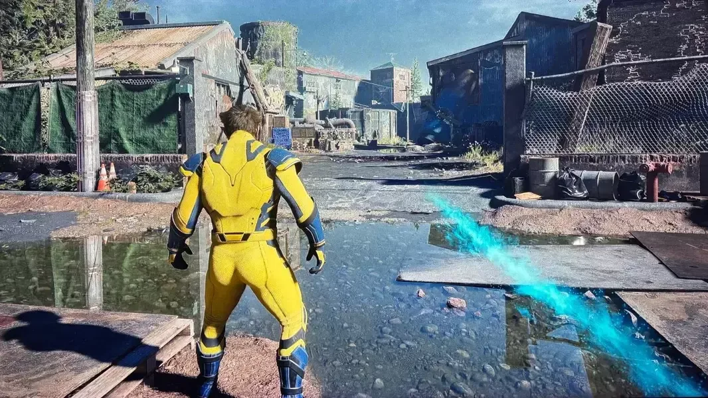
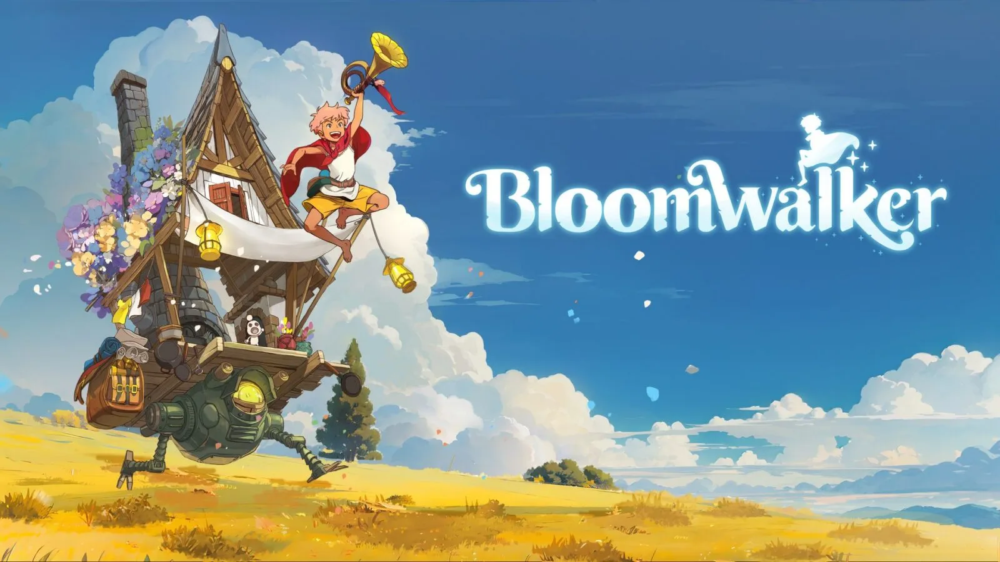
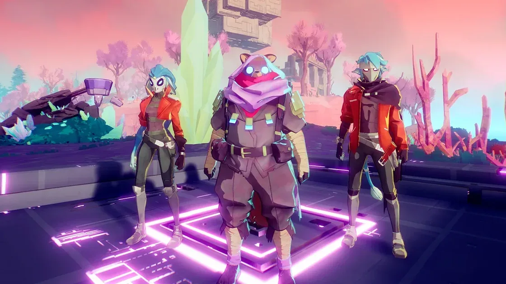

Bruce Straley se disculpó con el equipo de God of War: Laufey tras cuestionar la innovación en los juegos AAA
El director de The Last of Us afirmó que los grandes juegos de la industria se volvieron repetitivos y utilizó God of War: Laufey como ejemplo. Tras la repercusión de sus declaraciones, aclaró que sus críticas estaban dirigidas al modelo AAA en general y pidió disculpas al equipo de Santa Monica Studio.
 19 de septiembre de 2026
19 de septiembre de 2026
El 85,8 % de los desarrolladores japoneses encuestados utiliza inteligencia artificial generativa
Un estudio de la asociación CESA reveló que el 85,8 % de los desarrolladores de videojuegos consultados en Japón utiliza inteligencia artificial generativa en su trabajo. El informe también destaca la importancia de la supervisión humana y señala los derechos de autor como una de las principales preocupaciones de las empresas.

19 de septiembre de 2026Marvel’s Wolverine recibe un parche que reduce la intensidad de sus polémicos indicadores visuales
Insomniac Games lanzó la actualización v.01.001.005 para Marvel’s Wolverine, que reduce la opacidad de los indicadores Scent Trails y Audio Sense y soluciona algunos cierres inesperados. El estudio también evalúa incorporar opciones para modificar estos efectos en futuras actualizaciones.
19 de septiembre de 2026La Tokyo Game Show 2026 cancela su última jornada debido a la llegada de un tifón
La organización de la Tokyo Game Show 2026 anunció la cancelación de todas las actividades previstas para el lunes 21 de septiembre debido a las condiciones meteorológicas. La jornada del domingo 20 continuará con su programación habitual, mientras que algunos eventos fueron reubicados.

19 de septiembre de 2026Bloomwalker confirma su conexión con Ni no Kuni y presenta una aventura de restauración con una casa móvil
Netmarble Neo y Level-5 revelaron durante la Tokyo Game Show 2026 que Bloomwalker forma parte oficialmente del universo de Ni no Kuni. El juego propone explorar un mundo contaminado, recuperar sus santuarios y construir un hogar mientras viajamos junto a criaturas conocidas de la franquicia.
18 de septiembre de 2026La nueva película de Resident Evil se perfila como una de las mejores adaptaciones de videojuegos
La nueva película de Resident Evil, dirigida por Zach Cregger, llegó a los cines con una recepción muy positiva. La producción apuesta por una historia original, terror, humor negro y situaciones inspiradas en la experiencia de jugar a la saga de Capcom.
18 de septiembre de 2026CD Projekt RED explica por qué utiliza Unreal Engine 5 en The Witcher 4
CD Projekt RED continúa el desarrollo de The Witcher 4 con Unreal Engine 5 y una colaboración tecnológica con Epic Games. La compañía explicó que esta estrategia busca reducir el tiempo dedicado a resolver problemas técnicos y permitir que sus equipos se concentren en el diseño y la creación de contenido.

18 de septiembre de 2026El estudio de Hyper Light Drifter despide a casi todo su equipo tras la cancelación de un proyecto
Heart Machine atraviesa una grave crisis después de que una editora decidiera retirar la financiación de un juego que todavía no había sido anunciado. La medida provocó despidos masivos y dejó en duda la continuidad del estudio responsable de Hyper Light Drifter y Solar Ash.
18 de septiembre de 2026Bungie desmiente los rumores sobre una posible fusión entre Marathon y Destiny
Bungie salió al cruce de una serie de rumores que aseguraban que Marathon incorporaría elementos de Destiny para recuperar el interés de los jugadores. La compañía negó esas versiones y recordó que ambas franquicias continúan siendo proyectos independientes.